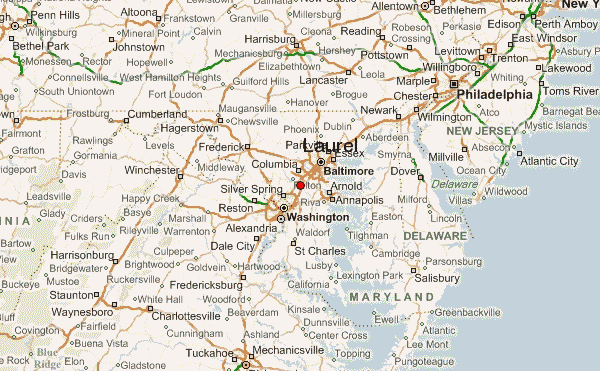

Here at Cameroonian Taste Cuisine, we seek to satisfy our customers excessively and for them to leave our restaurant with a smile on their face everytime. We have the best Cameroonian chefs and cooks in the DMV area and we are always looking to expand.
We are pleased to inform our customers that we have added a new Chef named Pierre Oumarou, a native Cameroonian with great experience. Pierre decided to join us from France after completing culinary school there and working at a popular Cameroonian restaurant in France. Upon hearing about our excellency and how welcoming we are, he was thrilled to join our team. Pierre's specialty is the Kwacoco Bible which we will be adding into our Menu. We highly encourage our customers to try this dish which is why it will be half price for the rest of this month!

We have been ranked #1 in the area for African dishes for the 6th month in a row! We would like to thank all of our staff members for their hard work and courtesy. We work very well as a team to ensure we are the best restaurant we can possibly be.
We are located in the heart of Laurel, MD. We are about 45 minutes from Washington D.C and Baltimore. 